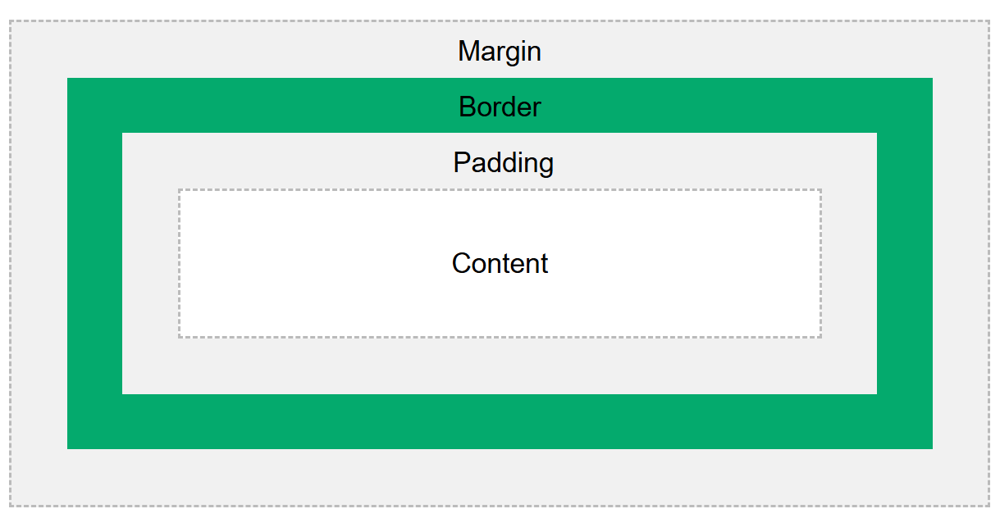

In CSS, the term "box model" is used when talking about web design and layout. The CSS box model is essentially a box that wraps around every HTML element. Every box consists of four parts: content, padding, borders and margins.
The image below illustrates the CSS box model:

Explanation of the different parts (from innermost part to outermost part):